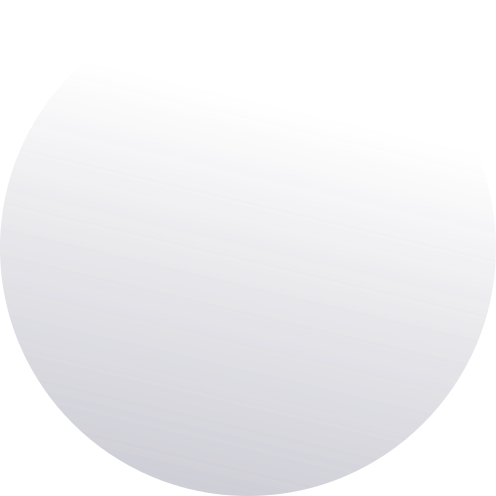
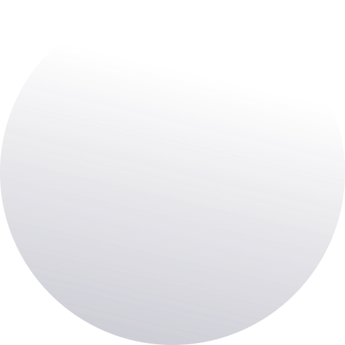

Tevredenheids percentage over de monorail.
De rode lijn laat zien dat 2/5 van de doelgroep, de jongere leeftijdsklasse, meer dan gemiddeld positief zijn over de ervaring van de monorail. Dit is nog niet het geval voor de oudere leeftijdsklasse. Deze geven aan dat de ervaring van het vervoersmiddel verbeterd kan worden door duidelijkere en transparantere informatie te verstrekken over de monorail. Bijvoorbeeld hoe snel de doorstroomtijd is, hoeveel incheck momenten er dag zijn en meer.

De drempelwaarde van klanten voor het gebruik van de monorail.
De rode lijn laat zien dat een lage drempelwaarde ideaal is voor onze consument. Dit betekent namelijk dat de consument weinig hoef te veranderen aan zijn of haars leefgewoontes bij gebruik van de monorail. De drempelwaarde is voor de leeftijdsklasse ’40 -59’ het hoogst, aangezien deze het vaakst de auto pakt. De jongere leeftijdsklasse is deze drempelwaarde het laagst, doordat deze het vaakst gebruik maken van het openbaar vervoer. Aan de hand van een lage prijsstrategie, transparante en duidelijke informatie voorzieningen en het design van onze coupés wordt de drempelwaarde voor drie oudste leeftijdsklasse verminderd.

Tevredenheids percentage over onze medewerkers.
De rode lijn laat zien dat 3/5 van de doelgroep, de jongere en gemiddelde leeftijdsklasse, meer dan gemiddeld positief zijn over onze medewerkers. Dit is nog niet het geval voor de oudere leeftijdsklasse. Deze geven aan dat onze medewerkers hoger kunnen scoren, door extra hulp te bieden bij het instappen en/of bij het inchecken. Deze feedback wordt geïmplementeerd door onze medewerkers extra cursussen te geven over klanttevredenheid.

Dagelijkse doorstroomtijd van de Monorail
De blauwe lijn zien dat maar de monorail 71,43% sneller is dan de vaste waarde van 5,55 minuten. Dit houdt in dat de monorail een doorstroomtijd heeft wat vaker sneller dan langzamer is dan de verwachte tijd tussen de stopmoment. Dit komt door de verminderde weerstand door het design van de coupés. Aan het einde na het tweede launch jaar, willen wij onze dagelijkse doorstroomtijd verhogen naar 90% sneller dan de verwachte tijd van 5 minuten.

Dagelijkse incheck momenten van de consumenten.
De monorail heeft een dagelijkse gemiddelde van afgerond 16.000 incheck momenten. Voor ons bedrijf is een dagelijkse gemiddelde van 15.000 rendabel. Dit betekent dat van de 28 dagen, 67,86% boven de waarde 15.000 zit. Aan het einde na het tweede launch jaar, willen wij onze dagelijkse gemiddelde verhogen naar 20.000.
Contact
Telefoon: 040 123 456 7
Email: monorail@gmail.com
Locatie: Rachelsmolen R10
 
